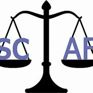

Stage in SCAF which began in 1/2/2023 to 20/5/2023 where i developed a smart scale with a touched screen and a dedicated program for stock tracking and management with Anis kharrat as my supervisor . this project was done with my partner Ahmed Khalaf Ben Mosbeh for our final year in ISGIS to obtain a nationale licence in automatics and electronics. 